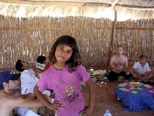
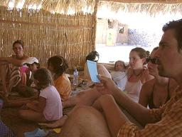
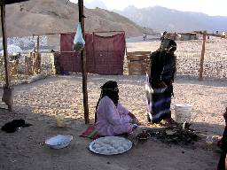
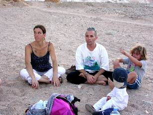
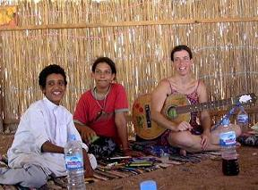

transforming CHECKPOINTS into MEETING-POINTS
| home |
| about |
| work |
| story |
| team |
| schedule |
| links |
MIDDLE EAST KIDS CAMP |
|
 For the past year we have been nurturing the dream of conducting a camp for kids and parents from different nations in the peaceful and serene atmosphere of the Sinai peninsula in Egypt. The idea was to invite children from countries in the Middle East and elsewhere to a camp where they will get to know each other on the heart level, have meaningful interaction between themselves and with the surrounding environment and create something new together. We chose a particular beach on the beautiful coast line of Sinai called Ras a Satan, or The Ras for short. The owners, Sigal, an Israeli woman and Ayash, her Bedouin-Egyptian husband, shared our vision and created both the physical and the emotional space for the kids camp to take place. We invited several families from Israel, Palestine, Egypt and other countries to participate in the camp. Due to financial and organizational difficulties, only one family came specially for the camp, while the rest of the children were already on vacation or living in Sinai. The plan was to have a morning and an afternoon group session, and in between everyone was free to enjoy swimming, scuba diving, playing and doing acrobatics on the beach. The opening session of the camp was held in a large ventilated hut made of palm trees and straw dedicated for the kids. We held a sharing circle and each member received a quality card written in English, Hebrew and Arabic with a specific quality he or she had to exercise during the following day. Then each person chose a partner with a complementing quality to co-operate on acting both qualities out. On the second day each person told the group what he or she did in the past day to practice their quality. We then had a Mayan astrology reading with Miso from Switzerland and a Mayan yoga class with Zoe fron the UK. In the evening, when the sun started to descend, we went with Kelvin on a trip to the Bedouin village in the desert next to The Ras. We were hosted by Bedouin women who gave us sweet black tea and flat bread they made on an open fire and offered us beads they threaded for sale. Zoes two year old son, Phoenix, was fascinated by the free roaming goats, and eight year old Matan collected fallen goat hair for an art work we were planning to do. The adults were asking the women questions about their lives, and twenty two year old Adam and ten year old Yael translated the questions to Arabic and back to Hebrew and English. We also saw a few camels hanging around the village, and Daphna, together with Matan and Yael, made up a catchy camel song, which later became part of our theater show. We left the village and walked into the dusky colorful desert, where we sat and shared the different experiences of being out in the ochre red desert, compared with the turquoise blue ocean. On our way back we were invited to sit in the yard of another family, this time with the men. They gave us more sweet black tea and told us something about their lives in mixed Hebrew, Arabic and English. The next morning we used different colors of sand from the desert to make paintings. Bushra, a seven year old Bedouin girl, loved it so much that she made about 10 different paintings, some of them together with Yael. After drying them up we hanged the paintings in passpartouts on the wall of our hut and they looked fantastic. In the afternoon we played a game of guessing words connected to the Bedouin life through pantomime. We invented a version in which two people come up with a combination of words and have to guess who their partner is without speaking, then the whole group has to guess what their words were. This game was one of everyones favorites. The next day we had a clay workshop. After a short introduction by Kelvin, the kids and parents went on to make remarkable cups and kettles, animals and decorations from yellow and red clay found in the desert nearby. Kelvin himself made dolphin and bird shaped flutes from clay as a souvenir for the camp participants. Twenty one year old Yael had an idea to recycle used plastic bottles found in abundance on the beach and she transformed them into colorful hanging rotating decorations for the camps hut. In the afternoon we had a brain storming session about the closing theater show, and we decided to make three scenes about meetings and interactions in Sinai and to call it: Encounters of the Sinai Kind. The first was about a meeting between a stressed Israeli businesswoman (ten year old Yael) and a Bedouin couple (Dhyan and seven year old Kamar), where she loosens up to the tunes of an ethnic melody sang by a Bedouin child (six year old El-Yam) and all of them learn to better understand each other. The second scene was based on the camel song we wrote on our desert hike. It was about a camel race (four and a half year old Avner gave the start signal) where two competing camel owners (El-Yam and Matan) are inspired by the friendship between their camels (Kamar and Yael) to stop arguing and begin communicating and getting to know each other. The last scene was about a fisherman (Yael) who catches a talking fish (Kamar), and is persuaded to empathize with the fish and release him, and eventually decides to join him for a game of underwater Taki. We spent the last camp day rehearsing the scenes and inventing and improving the songs accompanying each scene. In the afternoon the kids put up a musical show in our decorated hut, in front of their parents and many guests who were on vacation there. The show was a tremendous success, and the audience was thrilled by the way the acting and by the message and the spirit of the performance. We closed up with a sharing circle, where all the kids and adults who participated in the camp spoke about their feelings and about the things that moved them most during the camp. The strong positive response we received from everyone who was involved in the camp, and especially from the participants, encouraged us to start thinking about doing a camp next year, with enough funding to bring more children, especially from countries such us Palestine, Jordan, Syria, Lebanon and Iraq.  We send a big heartfelt thanks to all people who made this camp possible:
|
DONATE
|